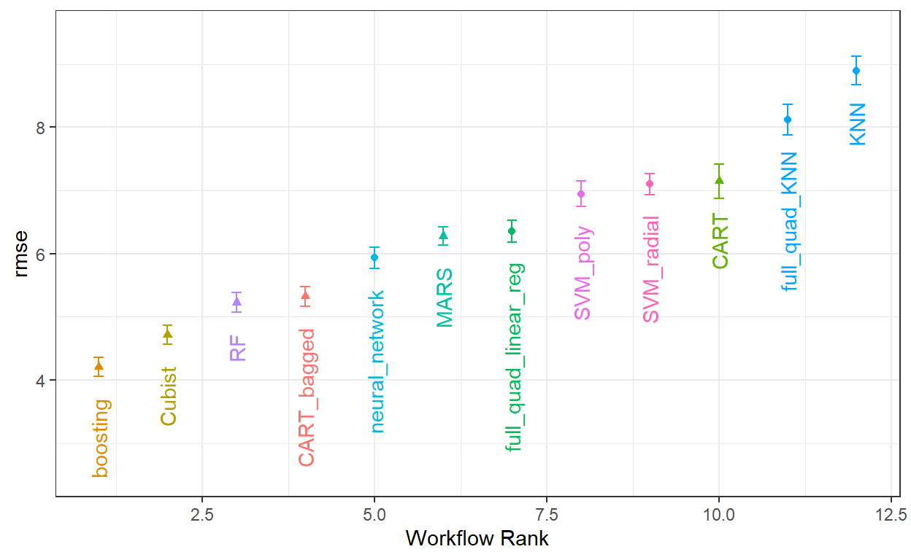
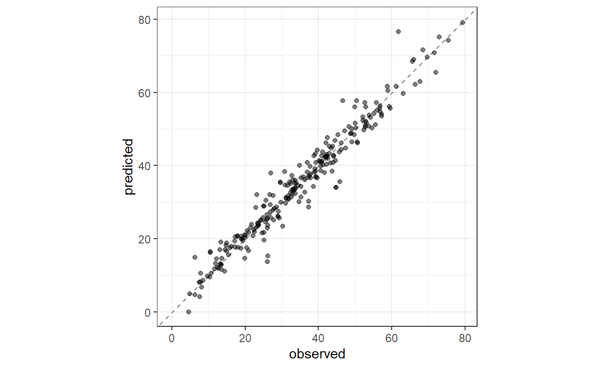
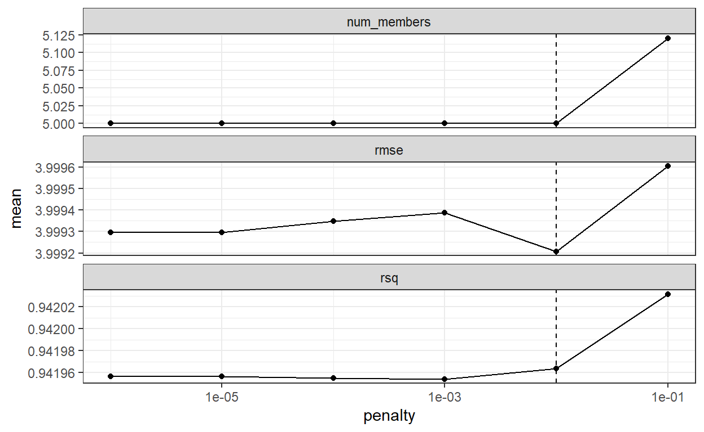
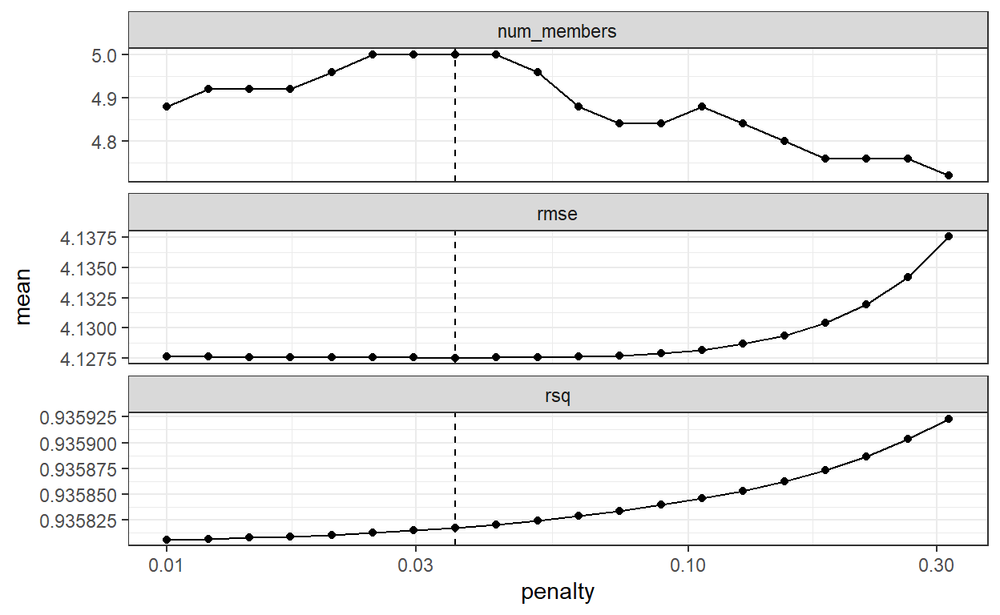
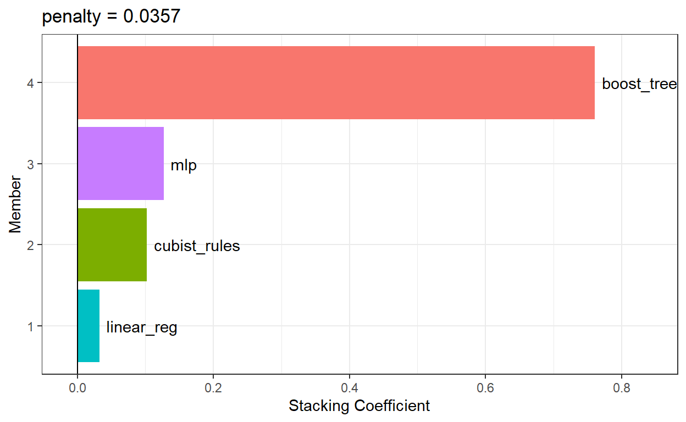

O que é um conjunto de modelos? Como construir um conjunto de modelos usando o pacote stacks
Um conjunto de modelos, onde as previsões de múltiplos aprendizes individuais são agregadas para fazer uma única previsão, pode produzir um modelo final de alto desempenho. Os métodos mais populares para criar modelos em conjunto são o bagging, random forest e boosting. Cada um desses métodos combina as previsões de várias versões do mesmo tipo de modelo (por exemplo, árvores de classificação).
No entanto, um dos primeiros métodos para criar conjuntos de modelos é o model stacking.
Aqui, mostrarei como combinar modelos preditivos usando o pacote stacks. O processo de construção de um conjunto de modelos é:
Nas seções subsequentes, descreveremos esse processo. No entanto, antes de prosseguir, vamos esclarecer alguma nomenclatura para as variações do que “o modelo” pode significar. Esse termo pode rapidamente se tornar sobrecarregado quando estamos trabalhando em uma análise de modelagem complexa! Vamos considerar o modelo de perceptron multicamada (MLP) (também conhecido como rede neural).
Em geral, falaremos sobre um modelo MLP como o tipo de modelo. Regressão linear e máquinas de vetores de suporte são outros tipos de modelos.
Usaremos o termo membros candidatos para descrever as possíveis configurações de modelos (de todos os tipos de modelos) que podem ser incluídas no conjunto empilhado. Isso significa que um modelo de empilhamento pode incluir diferentes tipos de modelos (por exemplo, árvores e redes neurais), bem como diferentes configurações do mesmo modelo (por exemplo, árvores com diferentes profundidades).
Usaremos os dados de misturas de concreto do livro Applied Predictive Modeling (M. Kuhn e Johnson 2013) como exemplo. O Capítulo 10 desse livro demonstrou modelos para prever a resistência à compressão de misturas de concreto usando os ingredientes como preditores. Uma ampla variedade de modelos foi avaliada com diferentes conjuntos de preditores e necessidades de pré-processamento. Como os conjuntos de fluxos de trabalho podem tornar esse processo de teste em larga escala de modelos mais fácil?
Primeiro, vamos definir os esquemas de divisão de dados e reamostragem.
library(tidymodels)
tidymodels_prefer()
data(concrete, package = "modeldata")
glimpse(concrete)Rows: 1,030
Columns: 9
$ cement <dbl> 540.0, 540.0, 332.5, 332.5, 198.6, 266.…
$ blast_furnace_slag <dbl> 0.0, 0.0, 142.5, 142.5, 132.4, 114.0, 9…
$ fly_ash <dbl> 0, 0, 0, 0, 0, 0, 0, 0, 0, 0, 0, 0, 0, …
$ water <dbl> 162, 162, 228, 228, 192, 228, 228, 228,…
$ superplasticizer <dbl> 2.5, 2.5, 0.0, 0.0, 0.0, 0.0, 0.0, 0.0,…
$ coarse_aggregate <dbl> 1040.0, 1055.0, 932.0, 932.0, 978.4, 93…
$ fine_aggregate <dbl> 676.0, 676.0, 594.0, 594.0, 825.5, 670.…
$ age <int> 28, 28, 270, 365, 360, 90, 365, 28, 28,…
$ compressive_strength <dbl> 79.99, 61.89, 40.27, 41.05, 44.30, 47.0…A coluna compressive_strength é o desfecho. O preditor age nos informa a idade da amostra de concreto no momento do teste em dias (o concreto se fortalece com o tempo) e os demais preditores, como cement e water, são componentes do concreto em unidades de quilogramas por metro cúbico.
Vamos usar a média da resistência à compressão por mistura de concreto para a modelagem.
concrete <-
concrete %>%
group_by(across(-compressive_strength)) %>%
summarize(compressive_strength = mean(compressive_strength),
.groups = "drop")
nrow(concrete)[1] 992Vamos dividir os dados usando a proporção padrão de treinamento-teste de 3:1 e reamostrar o conjunto de treinamento usando cinco repetições de validação cruzada de 10 conjuntos.
Alguns modelos (notadamente redes neurais, KNN e máquinas de vetores de suporte) exigem preditores que tenham sido centralizados e dimensionados, então alguns fluxos de trabalho de modelo exigirão receitas com essas etapas de pré-processamento. Para outros modelos, uma expansão tradicional do modelo de design de superfície de resposta (ou seja, quadrática e interações de dois níveis) é uma boa ideia. Para esses propósitos, criamos duas receitas:
normalized_rec <-
recipe(compressive_strength ~ ., data = concrete_train) %>%
step_normalize(all_predictors())
poly_recipe <-
normalized_rec %>%
step_poly(all_predictors()) %>%
step_interact(~ all_predictors():all_predictors())Para os modelos, usamos o pacote parsnip para criar um conjunto de especificações de modelos:
library(rules)
library(baguette)
linear_reg_spec <-
linear_reg(penalty = tune(), mixture = tune()) %>%
set_engine("glmnet")
nnet_spec <-
mlp(hidden_units = tune(), penalty = tune(), epochs = tune()) %>%
set_engine("nnet", MaxNWts = 2600) %>%
set_mode("regression")
mars_spec <-
mars(prod_degree = tune()) %>% #<- use GCV to choose terms
set_engine("earth") %>%
set_mode("regression")
svm_r_spec <-
svm_rbf(cost = tune(), rbf_sigma = tune()) %>%
set_engine("kernlab") %>%
set_mode("regression")
svm_p_spec <-
svm_poly(cost = tune(), degree = tune()) %>%
set_engine("kernlab") %>%
set_mode("regression")
knn_spec <-
nearest_neighbor(neighbors = tune(), dist_power = tune(), weight_func = tune()) %>%
set_engine("kknn") %>%
set_mode("regression")
cart_spec <-
decision_tree(cost_complexity = tune(), min_n = tune()) %>%
set_engine("rpart") %>%
set_mode("regression")
bag_cart_spec <-
bag_tree() %>%
set_engine("rpart", times = 50L) %>%
set_mode("regression")
rf_spec <-
rand_forest(mtry = tune(), min_n = tune(), trees = 1000) %>%
set_engine("ranger") %>%
set_mode("regression")
xgb_spec <-
boost_tree(tree_depth = tune(), learn_rate = tune(), loss_reduction = tune(),
min_n = tune(), sample_size = tune(), trees = tune()) %>%
set_engine("xgboost") %>%
set_mode("regression")
cubist_spec <-
cubist_rules(committees = tune(), neighbors = tune()) %>%
set_engine("Cubist") A análise em M. Kuhn e Johnson (2013) especifica que a rede neural deve ter até 27 unidades ocultas na camada. A função extract_parameter_set_dials() extrai o conjunto de parâmetros, que modificamos para ter a faixa de parâmetros correta
nnet_param <-
nnet_spec %>%
extract_parameter_set_dials() %>%
update(hidden_units = hidden_units(c(1, 27)))Como podemos corresponder esses modelos às suas receitas, ajustá-los e depois avaliar sua eficiência de forma eficiente? Um conjunto de fluxos de trabalho oferece uma solução
Os conjuntos de fluxo de trabalho aceitam listas nomeadas de pré-processadores e especificações de modelos e os combinam em um objeto contendo vários fluxos de trabalho. Existem três tipos possíveis de pré-processadores:
Como exemplo inicial de um conjunto de fluxo de trabalho, vamos combinar a receita que apenas padroniza os preditores com os modelos não lineares que exigem que os preditores estejam nas mesmas unidades:
normalized <-
workflow_set(
preproc = list(normalized = normalized_rec),
models = list(SVM_radial = svm_r_spec, SVM_poly = svm_p_spec,
KNN = knn_spec, neural_network = nnet_spec)
)
normalized# A workflow set/tibble: 4 × 4
wflow_id info option result
<chr> <list> <list> <list>
1 normalized_SVM_radial <tibble [1 × 4]> <opts[0]> <list [0]>
2 normalized_SVM_poly <tibble [1 × 4]> <opts[0]> <list [0]>
3 normalized_KNN <tibble [1 × 4]> <opts[0]> <list [0]>
4 normalized_neural_network <tibble [1 × 4]> <opts[0]> <list [0]>Como só há um pré-processador, esta função cria um conjunto de fluxos de trabalho com esse valor. Se o pré-processador contivesse mais de uma entrada, a função criaria todas as combinações de pré-processadores e modelos.
A coluna wflow_id é criada automaticamente, mas pode ser modificada usando uma chamada para mutate(). A coluna info contém um tibble com alguns identificadores e o objeto de fluxo de trabalho. O fluxo de trabalho pode ser extraído:
normalized %>% extract_workflow(id = "normalized_KNN")══ Workflow ══════════════════════════════════════════════════════════
Preprocessor: Recipe
Model: nearest_neighbor()
── Preprocessor ──────────────────────────────────────────────────────
1 Recipe Step
• step_normalize()
── Model ─────────────────────────────────────────────────────────────
K-Nearest Neighbor Model Specification (regression)
Main Arguments:
neighbors = tune()
weight_func = tune()
dist_power = tune()
Computational engine: kknn A coluna options é um espaço reservado para quaisquer argumentos a serem usados quando avaliamos o fluxo de trabalho. Por exemplo, para adicionar o objeto de parâmetro da rede neural:
normalized <-
normalized %>%
option_add(param_info = nnet_param, id = "normalized_neural_network")
normalized# A workflow set/tibble: 4 × 4
wflow_id info option result
<chr> <list> <list> <list>
1 normalized_SVM_radial <tibble [1 × 4]> <opts[0]> <list [0]>
2 normalized_SVM_poly <tibble [1 × 4]> <opts[0]> <list [0]>
3 normalized_KNN <tibble [1 × 4]> <opts[0]> <list [0]>
4 normalized_neural_network <tibble [1 × 4]> <opts[1]> <list [0]>Quando uma função do pacote tune ou finetune é usada para ajustar (ou reamostrar) o fluxo de trabalho, este argumento será usado.
A coluna de resultado é um espaço reservado para a saída das funções de ajuste ou reamostragem.
Para os outros modelos não lineares, vamos criar outro conjunto de fluxo de trabalho que use seletores dplyr para o resultado e os preditores:
model_vars <-
workflow_variables(outcomes = compressive_strength,
predictors = everything())
no_pre_proc <-
workflow_set(
preproc = list(simple = model_vars),
models = list(MARS = mars_spec, CART = cart_spec, CART_bagged = bag_cart_spec,
RF = rf_spec, boosting = xgb_spec, Cubist = cubist_spec)
)
no_pre_proc# A workflow set/tibble: 6 × 4
wflow_id info option result
<chr> <list> <list> <list>
1 simple_MARS <tibble [1 × 4]> <opts[0]> <list [0]>
2 simple_CART <tibble [1 × 4]> <opts[0]> <list [0]>
3 simple_CART_bagged <tibble [1 × 4]> <opts[0]> <list [0]>
4 simple_RF <tibble [1 × 4]> <opts[0]> <list [0]>
5 simple_boosting <tibble [1 × 4]> <opts[0]> <list [0]>
6 simple_Cubist <tibble [1 × 4]> <opts[0]> <list [0]>Por fim, montamos o conjunto que utiliza termos não lineares e interações com os modelos apropriados:
Esses objetos são tibbles com a classe adicional de workflow_set. A ligação de linhas não afeta o estado dos conjuntos e o resultado é ele próprio um conjunto de fluxo de trabalho:
all_workflows <-
bind_rows(no_pre_proc, normalized, with_features) %>%
# Make the workflow ID's a little more simple:
mutate(wflow_id = gsub("(simple_)|(normalized_)", "", wflow_id))
all_workflows# A workflow set/tibble: 12 × 4
wflow_id info option result
<chr> <list> <list> <list>
1 MARS <tibble [1 × 4]> <opts[0]> <list [0]>
2 CART <tibble [1 × 4]> <opts[0]> <list [0]>
3 CART_bagged <tibble [1 × 4]> <opts[0]> <list [0]>
4 RF <tibble [1 × 4]> <opts[0]> <list [0]>
5 boosting <tibble [1 × 4]> <opts[0]> <list [0]>
6 Cubist <tibble [1 × 4]> <opts[0]> <list [0]>
7 SVM_radial <tibble [1 × 4]> <opts[0]> <list [0]>
8 SVM_poly <tibble [1 × 4]> <opts[0]> <list [0]>
9 KNN <tibble [1 × 4]> <opts[0]> <list [0]>
10 neural_network <tibble [1 × 4]> <opts[1]> <list [0]>
11 full_quad_linear_reg <tibble [1 × 4]> <opts[0]> <list [0]>
12 full_quad_KNN <tibble [1 × 4]> <opts[0]> <list [0]>Um método eficaz para triar um grande conjunto de modelos de forma eficiente é usar a abordagem de racing. Com um conjunto de fluxo de trabalho, podemos usar a função workflow_map() para essa abordagem. Lembre-se de que após encadearmos nosso conjunto de fluxo de trabalho, o argumento que usamos é a função a ser aplicada aos fluxos de trabalho; neste caso, podemos usar um valor de “tune_race_anova”. Também passamos um objeto de controle apropriado; caso contrário, as opções seriam as mesmas do código na seção anterior.
library(finetune)
library(doParallel)
cores <- parallel::detectCores()
cl <- makePSOCKcluster(cores)
registerDoParallel(cl)
race_ctrl <-
control_race(
save_pred = TRUE,
parallel_over = "everything",
save_workflow = TRUE
)
race_results <-
all_workflows %>%
workflow_map(
"tune_race_anova",
seed = 1503,
resamples = concrete_folds,
grid = 25,
control = race_ctrl
)Os elementos da coluna de resultado mostrem um valor de “race[+]”, indicando um tipo diferente de objeto:
race_results# A workflow set/tibble: 12 × 4
wflow_id info option result
<chr> <list> <list> <list>
1 MARS <tibble [1 × 4]> <opts[3]> <race[+]>
2 CART <tibble [1 × 4]> <opts[3]> <race[+]>
3 CART_bagged <tibble [1 × 4]> <opts[3]> <rsmp[+]>
4 RF <tibble [1 × 4]> <opts[3]> <race[+]>
5 boosting <tibble [1 × 4]> <opts[3]> <race[+]>
6 Cubist <tibble [1 × 4]> <opts[3]> <race[+]>
7 SVM_radial <tibble [1 × 4]> <opts[3]> <race[+]>
8 SVM_poly <tibble [1 × 4]> <opts[3]> <race[+]>
9 KNN <tibble [1 × 4]> <opts[3]> <race[+]>
10 neural_network <tibble [1 × 4]> <opts[4]> <race[+]>
11 full_quad_linear_reg <tibble [1 × 4]> <opts[3]> <race[+]>
12 full_quad_KNN <tibble [1 × 4]> <opts[3]> <race[+]>Analisando os resultados
autoplot(
race_results,
rank_metric = "rmse",
metric = "rmse",
select_best = TRUE
) +
geom_text(aes(y = mean - 1/2, label = wflow_id), angle = 90, hjust = 1) +
lims(y = c(2.5, 9.5)) +
theme_bw()+
theme(legend.position = "none")
No geral, a abordagem de racing estimou um total de 1.050 modelos, 8,33% do conjunto completo de 12.600 modelos na grade completa.
Similar ao que mostrei em posts anteriores, o processo de escolher o modelo final e ajustá-lo ao conjunto de treinamento é direto. O primeiro passo é escolher um fluxo de trabalho para finalizar. Como o modelo de árvores funcionou bem, vamos extrair isso do conjunto, atualizar os parâmetros com as melhores configurações numericamente e ajustar ao conjunto de treinamento:
best_results <-
race_results %>%
extract_workflow_set_result("boosting") %>%
select_best(metric = "rmse")
best_results# A tibble: 1 × 7
trees min_n tree_depth learn_rate loss_reduction sample_size .config
<int> <int> <int> <dbl> <dbl> <dbl> <chr>
1 1957 8 7 0.0756 0.000000145 0.679 Prepro…boosting_test_results <-
race_results %>%
extract_workflow("boosting") %>%
finalize_workflow(best_results) %>%
last_fit(split = concrete_split)Podemos ver os resultados das métricas no conjunto de teste e visualizar as previsões.
collect_metrics(boosting_test_results)# A tibble: 2 × 4
.metric .estimator .estimate .config
<chr> <chr> <dbl> <chr>
1 rmse standard 3.48 Preprocessor1_Model1
2 rsq standard 0.952 Preprocessor1_Model1boosting_test_results %>%
collect_predictions() %>%
ggplot(aes(x = compressive_strength, y = .pred)) +
geom_abline(color = "gray50", lty = 2) +
geom_point(alpha = 0.5) +
coord_obs_pred() +
labs(x = "observed", y = "predicted")+
theme_bw()
Aqui podemos observar como a resistência à compressão observada e prevista para essas misturas de concreto se alinham.
Para resumir onde estamos até agora, o primeiro passo para a criação de um ensemble empilhado (stacking) é reunir as previsões do conjunto de avaliação para o conjunto de treinamento de cada modelo candidato. Podemos usar essas previsões do conjunto de avaliação para avançar e construir um ensemble empilhado.
Para começar a criar ensembles com o pacote stacks, crie uma pilha de dados vazia usando a função stacks() e, em seguida, adicione os modelos candidatos. Lembre-se de que usamos conjuntos de workflows para ajustar uma grande variedade de modelos a esses dados. Vamos usar os resultados da corrida:
library(stacks)
concrete_stack <-
stacks() %>%
add_candidates(race_results)
concrete_stack# A data stack with 12 model definitions and 19 candidate members:
# MARS: 1 model configuration
# CART: 1 model configuration
# CART_bagged: 1 model configuration
# RF: 1 model configuration
# boosting: 1 model configuration
# Cubist: 1 model configuration
# SVM_radial: 1 model configuration
# SVM_poly: 1 model configuration
# KNN: 3 model configurations
# neural_network: 2 model configurations
# full_quad_linear_reg: 5 model configurations
# full_quad_KNN: 1 model configuration
# Outcome: compressive_strength (numeric)Lembre-se de que os métodos de corrida são mais eficientes, pois podem não avaliar todas as configurações em todas as reamostragens. O empilhamento (stacking) exige que todos os membros candidatos tenham o conjunto completo de reamostragens. A função add_candidates() inclui apenas as configurações de modelos que têm resultados completos.
Se não tivéssemos usado o pacote workflowsets, objetos dos pacotes tune e finetune também poderiam ser passados para a função add_candidates(). Isso pode incluir tanto objetos de busca em grade (grid search) quanto de busca iterativa (iterative search).
As previsões do conjunto de treinamento e os dados observados correspondentes são usados para criar um modelo de meta-aprendizagem, onde as previsões do conjunto de avaliação são os preditores dos dados observados. A meta-aprendizagem pode ser realizada usando qualquer modelo. O modelo mais comumente usado é um modelo linear generalizado regularizado, que abrange modelos lineares, logísticos e multinomiais. Especificamente, a regularização via penalidade lasso, que usa contração para puxar pontos em direção a um valor central, tem várias vantagens:
stacks (mas pode ser alterado através de um argumento opcional).Como nosso resultado é numérico, a regressão linear é usada para o metamodelo. Ajustar o metamodelo é tão simples quanto usar:
set.seed(2001)
ens <- blend_predictions(concrete_stack)Isso avalia o modelo de meta-aprendizagem em uma grade predefinida de valores de penalidade lasso e usa um método de reamostragem interno para determinar o melhor valor. O método autoplot(), nos ajuda a entender se o método de penalização padrão foi suficiente:
autoplot(ens)+theme_bw()
O painel superior mostra o número médio de membros candidatos do ensemble retidos pelo modelo de meta-aprendizagem. Podemos ver que o número de membros é bastante constante e, à medida que aumenta, o RMSE também aumenta.
A faixa padrão pode não ter nos servido bem aqui. Para avaliar o modelo de meta-aprendizagem com penalidades maiores, vamos passar uma opção adicional:
set.seed(2002)
ens <- blend_predictions(concrete_stack, penalty = 10^seq(-2, -0.5, length = 20))Agora, vemos uma faixa onde o modelo de ensemble se torna pior do que na nossa primeira combinação (mas não por muito). Os valores de \(R^2\) aumentam com mais membros e penalidades maiores.
autoplot(ens)+theme_bw()
Ao combinar previsões usando um modelo de regressão, é comum restringir os parâmetros de combinação para serem não negativos. Para esses dados, essa restrição tem o efeito de eliminar muitos dos membros potenciais do ensemble; mesmo com penalidades relativamente baixas, o ensemble é limitado a uma fração dos dezoito originais.
O valor da penalidade associado ao menor RMSE foi 0,051. O objeto mostra os detalhes do modelo de meta-aprendizagem:
ens# A tibble: 4 × 3
member type weight
<chr> <chr> <dbl>
1 boosting_1_04 boost_tree 0.761
2 neural_network_1_12 mlp 0.127
3 Cubist_1_25 cubist_rules 0.102
4 full_quad_linear_reg_1_16 linear_reg 0.0325O modelo de meta-aprendizagem de regressão linear regularizada continha sete coeficientes de combinação distribuídos entre quatro tipos de modelos. O método autoplot() pode ser usado novamente para mostrar as contribuições de cada tipo de modelo
autoplot(ens, "weights") +
geom_text(aes(x = weight + 0.01, label = model), hjust = 0) +
theme_bw()+
theme(legend.position = "none") +
lims(x = c(-0.01, 0.84))
O ensemble contém 4 membros candidatos, e agora sabemos como suas previsões podem ser combinadas em uma previsão final para o ensemble. No entanto, esses ajustes individuais dos modelos ainda não foram criados. Para poder usar o modelo de empilhamento, são necessitos sete ajustes adicionais dos modelos. Eles utilizam o conjunto de treinamento completo com os preditores originais.
O pacote stacks possui uma função chamada fit_members() que treina e retorna esses modelos:
ens <- fit_members(ens)Isso atualiza o objeto de empilhamento com os objetos de fluxo de trabalho ajustados para cada membro. Neste ponto, o modelo de empilhamento pode ser usado para fazer previsões.
Dado que o processo de combinação utilizou reamostragem, podemos estimar que o ensemble com 4 membros teve um RMSE estimado de 4.12. Lembre-se que o melhor modelo de árvore impulsionada teve um RMSE no conjunto de teste de 3.41. Como o modelo de ensemble se sairá no conjunto de teste? Podemos usar a função predict() para descobrir:
reg_metrics <- metric_set(rmse, rsq)
ens_test_pred <-
predict(ens, concrete_test) %>%
bind_cols(concrete_test)
ens_test_pred %>%
reg_metrics(compressive_strength, .pred)# A tibble: 2 × 3
.metric .estimator .estimate
<chr> <chr> <dbl>
1 rmse standard 3.35
2 rsq standard 0.956Isso é moderadamente melhor do que nosso melhor modelo individual. É bastante comum que o empilhamento produza benefícios incrementais quando comparado ao melhor modelo único.